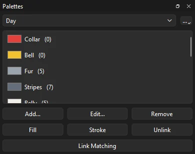
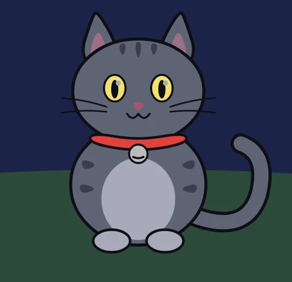
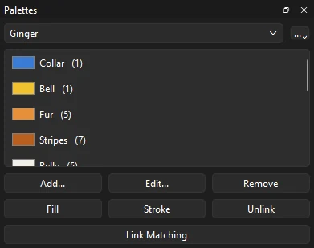

Tutorials
Linked palettes
Recolor a cat by changing one named color, link the parts that were left out, and swap between Day, Night and a ginger palette of your own.
This page is also a lesson inside Phoenix: choose and start Linked palettes, and Phoenix points at each control as you go. It takes about 7 minutes.
To follow along here instead, download the starting document, linked-palettes.fla, and open it with .
A character is painted with a handful of colors used over and over: the same fur on the head, the body, the ears and the tail. In a linked palette each of those colors has a name, and every fill and line painted with it is linked to that name. Change the color once and everything linked to it follows; swap to another palette and the whole picture recolors.
The cat on the Cat layer and the hill and sky on the Background layer are already linked to a palette called Day. The document has a second palette, Night.
1. Open the Palettes panel

The Palettes panel opens from . In the lesson, Phoenix opens it for you.
The list at the top shows Day, the palette in use. Under it are its colors, each with its name and, in brackets, how many fills and lines are linked to it: Fur is used 5 times. Collar and Bell show 0: nothing is linked to them yet. Scroll the list to see the rest, or drag the panel's top edge to make it taller.
2. Try the night
In the list at the top of the panel, choose Night. Everything linked takes the night's colors at once: a dark sky, a pale moon, a dusky cat with glowing eyes.
The collar stays bright red and the bell gray. They are not linked, so no palette reaches them.

3. Back to day
Choose Day in the same list. The sun comes back up.
4. Link the collar
Click Collar in the list of colors, then click Link Matching. Every fill and line in the document that has the collar's red is now linked to Collar, and its number goes up to 1. The collar looks the same: linking keeps the color it has.
5. Select the bell
Press V for the Selection tool, then click the gray bell under the cat's chin. A box goes round it.
6. Paint it from the palette
Click Bell in the list, then click Fill. The bell turns gold, the Bell color, and is linked to it. Its outline keeps its own link, to Outline: Fill paints fills, Stroke paints lines.
7. Change a color
Double-click Collar in the list. In the color window, type #3A7BD5 in the HTML box and click OK. The collar turns blue, and anything else linked to Collar would too. The change is made to Day only; Night keeps its own collar color.
8. Make a new palette
Click the ... button at the right of the palette list and choose New Palette.... A new palette starts as a copy of the one in use. Type Ginger in place of Night and click OK.
Ginger is now in use. Nothing changes on the stage yet, since its colors are the same as Day's.
9. Ginger fur
Double-click Fur, type #E8913A in the HTML box and click OK. The head, the body, both ears and the tail turn orange together.
10. Ginger stripes
Double-click Stripes, type #B85F1E and click OK. All seven stripes darken to match.
11. Swap palettes

Choose Night in the palette list, then Day, then Ginger again. Each one recolors the cat and the scene in one step, the collar and the bell too.
What you did
You linked art to named colors, then recolored it by changing one color and by swapping whole palettes. Each change is one step: takes it back.
Every palette in a document has the same color names, so a swap always finds a color for everything linked. Add... makes a new named color from the current fill color and puts it in every palette; select some art and click Fill or Stroke to paint it with that color. The colors are written into the art too, so the file looks as you last colored it wherever it opens.
To keep a character the same color in every scene of a show, choose Save Palette to File... from the ... menu, and Link Palette File... in each other document: a change made in any of them reaches them all.
For everything this tutorial touches on, see Linked palettes and Sharing a palette between documents.